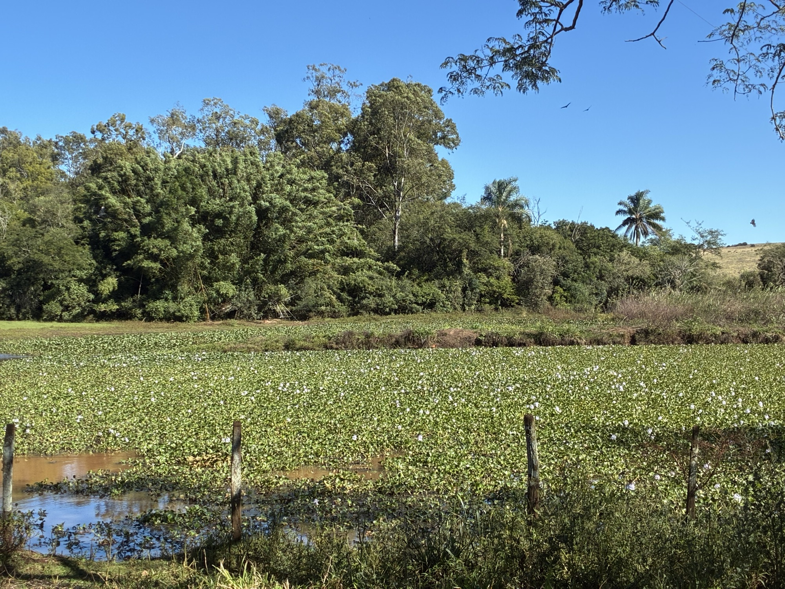
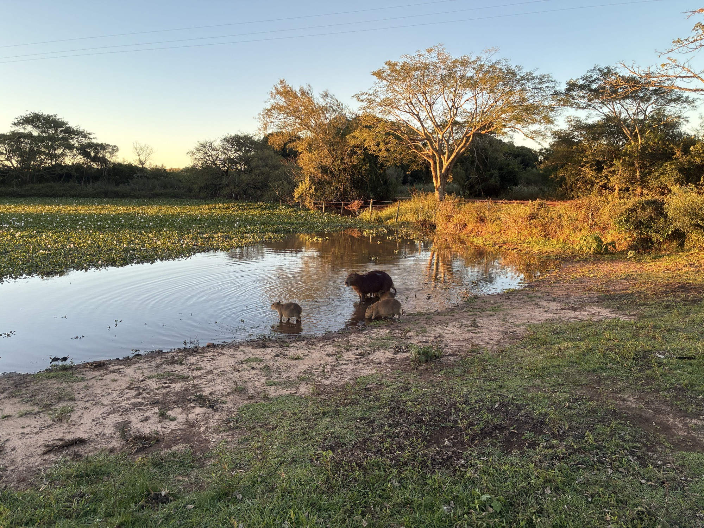
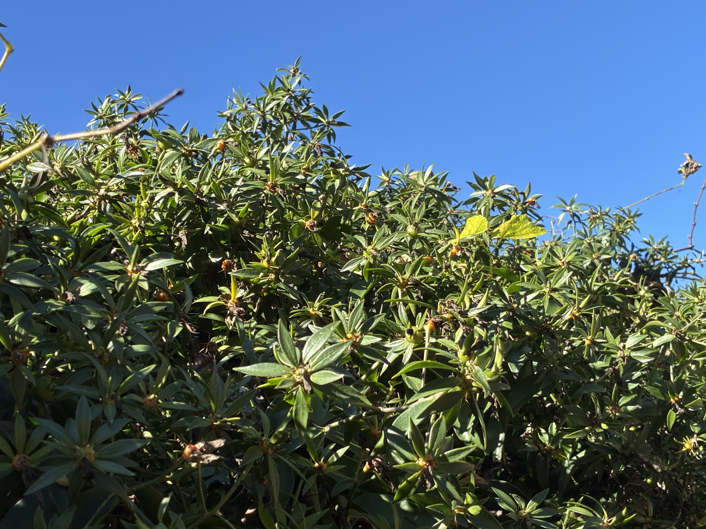
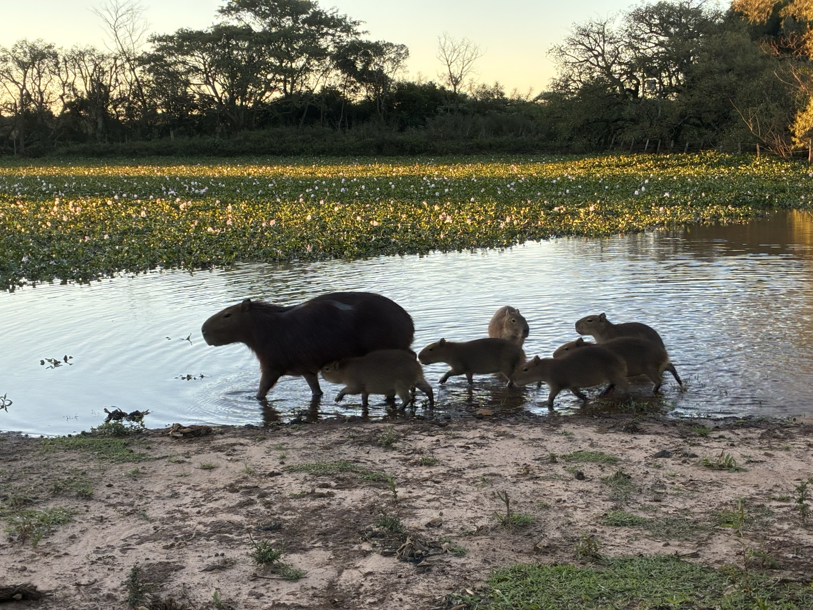

A Cascata
Uma queda d'água de cerca de 10 metros, a maior da região, cercada por formações rochosas que lembram um cânion, raras no pampa.
Um recanto histórico do pampa gaúcho, onde a maior cascata da região, as capivaras e mais de um século de tradição rural convivem em paz.
Ver as galerias Planeje sua visitaA Fazenda da Cascata ocupa terras da antiga Sesmaria do Parové, adquiridas em 1897, com sede construída em 1903. Mais de um século depois, segue viva entre a lida campeira, a natureza preservada e a memória de quem fez o pampa.

Uma queda d'água de cerca de 10 metros, a maior da região, cercada por formações rochosas que lembram um cânion, raras no pampa.

Um bando de capivaras pasta livremente perto da sede, sem se incomodar com o movimento, encantando quem chega.

Fundado em 2010, guarda arados de madeira, baús do século XIX e ferramentas que contam a evolução da vida rural.

As nogueiras-pecã rendem uma colheita que reúne a família e mostra a face produtiva da propriedade.
Entre campos, banhados e o pôr do sol dourado, a fauna se mostra à vontade: capivaras às margens da água, emas cruzando os campos e aves nativas em meio à paisagem aberta.
A propriedade preserva esse equilíbrio entre a criação de gado a campo e a vida selvagem que sempre habitou estas terras.
Conheça a fauna
Fotos e vídeos da fazenda, agrupados por assunto. Capivaras, pecuária, emas, a colheita de nozes, as paisagens e a sede histórica.